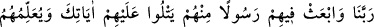
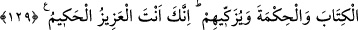

yapmışlardır. Çünkü onlar Kâbe’yi inşâ edince insanlara bir “sünnet” bırakmak
istediler ve Kâbe’nin, onunla ilgili diğer hacc vazifelerinin ve yerlerinin, günahlardan
kurtulma, gaybleri en iyi bilen Allah’dan af dileme yerleri olduğunu öğretmek istediler.
“Muhakkak ki sen tevbeleri kabûl eden ve çok merhametli olansın.” Tevbe, aslında
“dönmek” demektir. Âyette geçen Allah’ın kuluna tevbe ile muâmele şeklindeki duâsı,
onun tevbesini kabûl etmesi, tevbesine vesîle olan sebebleri ve kötü kalbinin iyiye
dönmesini sağlayacak sebebleri yaratması; etrafı isyan ve hatalarla kirlendikten sonra
tâat ile süslemesidir.
129. Ey Rabbimiz! Onlara, içlerinden senin âyetlerini kendilerine okuyacak,
onlara kitap ve hikmeti öğretecek, onları temizleyecek bir peygamber gönder.
Çünkü üstün gelen, her şeyi yerli yerince yapan yalnız sensin.
Rabbimiz! neslimizden müslüman ümmeti olan topluluğa, kendilerinden peygamber
gönder. Çünkü gönderilen peygamber, kendi aralarından olmayabilir. Âyette
“kendilerinden” diye özellikle vurgulanışının sebebi budur. Nitekim, onların
nesillerinden de Nebî (s.a.)’den başka peygamber gönderilmemiştir. O’nunla duâlarına
icâbet edilmiştir. Rivâyete göre Hz. İbrâhîm’e: “Duân kabûl oldu, yalnız o peygamber
kıyâmete yakın bir zamanda gelecek.” denilmiştir. Hadiste de şöyle gelmiştir:
“Âdem (a.s.) daha çamur hâlinde iken ben; Allah katında “hatemü’n-nebiyyîn” diye
yazılmıştım. Size ilk işaretlerimi şimdi vereceğim: Babam İbrâhîm (a.s.)’ın duâsı, Îsâ
(a.s.)’ın müjdesi ve annemin bana hamileyken gördüğü rüyâdır. O rüyâda annem
kendinden bir nûr çıktığını ve Şam saraylarını aydınlattığını görmüştü.”[15] Hz.
İbrâhîm’in duâsıyla O’nun Allah’dan İsrâîloğulları’na aralarından peygamber
gönderilmesini istediği duâyı kasdetmiştir.
“Onlara senin âyetlerini okusun, tevhid ve nübüvvete dâir kendisine vahyedilen
delilleri onlara tebliğ etsin.”
Onlara anladıkları kadarıyla Kur’ân’ı ve kendilerini kemâle erdirecek doğru bilgileri
ve şerîatın hükümlerini öğretin. İbn Düreyd: “Güzel ve iyi olan şeyi sana hatırlatan ve
seni ona dâvet eden veya kötü olan şeyden seni uzaklaştıran her kelime hikmettir.”
demiştir.
O peygamber, ister farzları terkederek, ister haramları işleyerek kazandıkları
günahların kirinden onları, amel ve istîdâdları nisbetinde temizler.
İbrâhîm (a.s.), bu üç duâyı yapınca duâsını Yüce Allah’ı övmekle bitirdi ve
“Muhakkak ki azîz sensin, hakîm sensin” yâni Sen istediğin her şeye galip ve üstün
gelirsin, sadece hikmet ve maslahatın gereğini yaparsın, dedi. Cenâb-ı Hak zâtıyla azîz